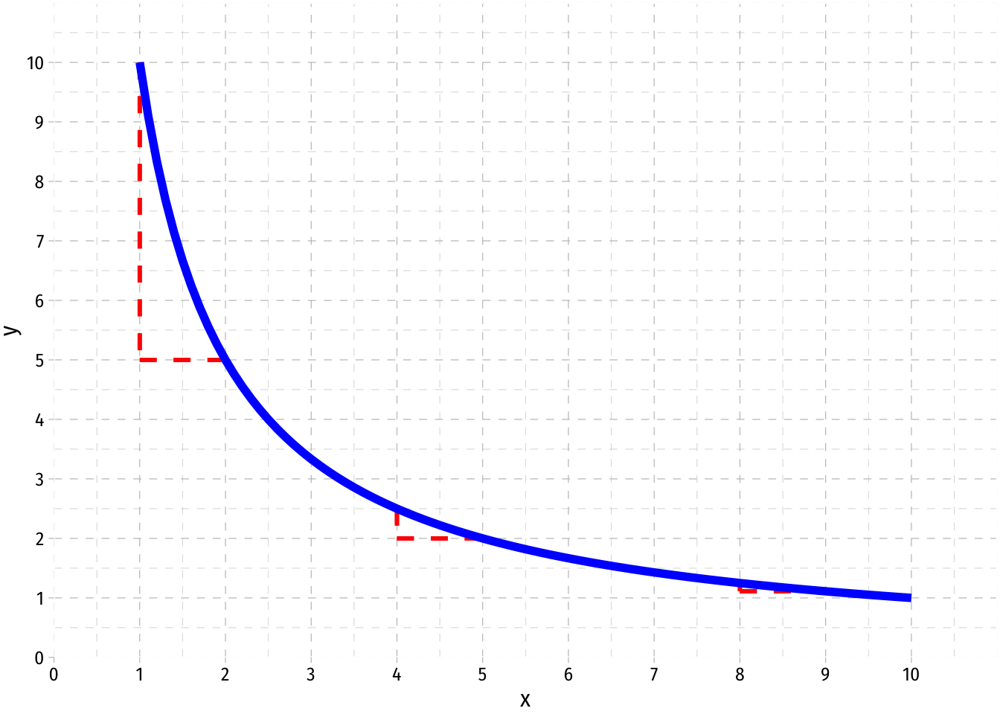
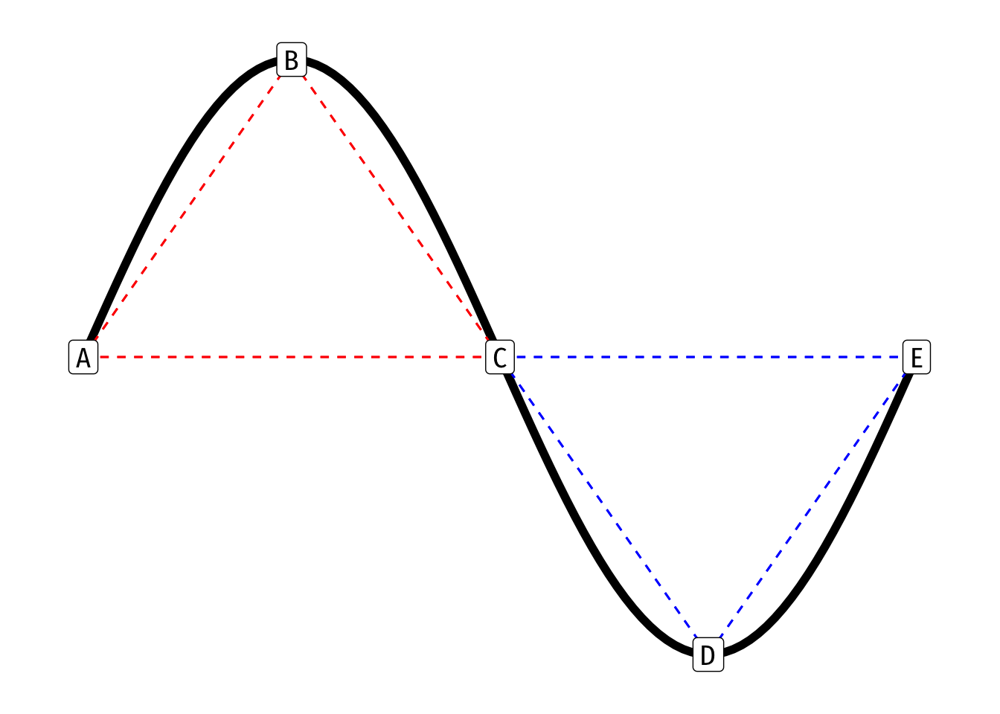
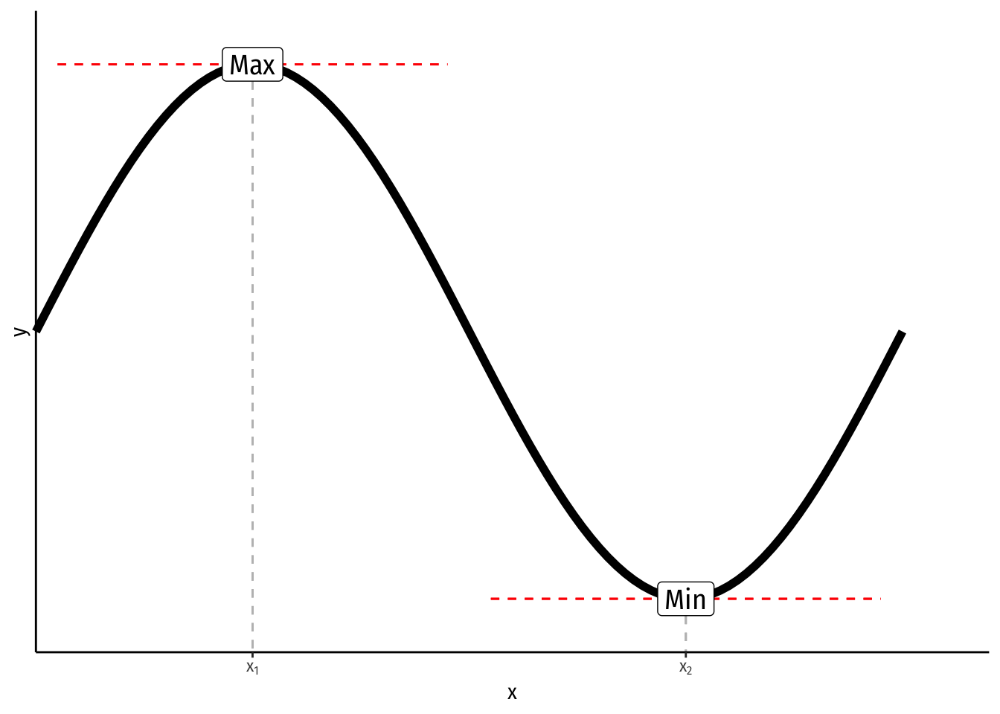
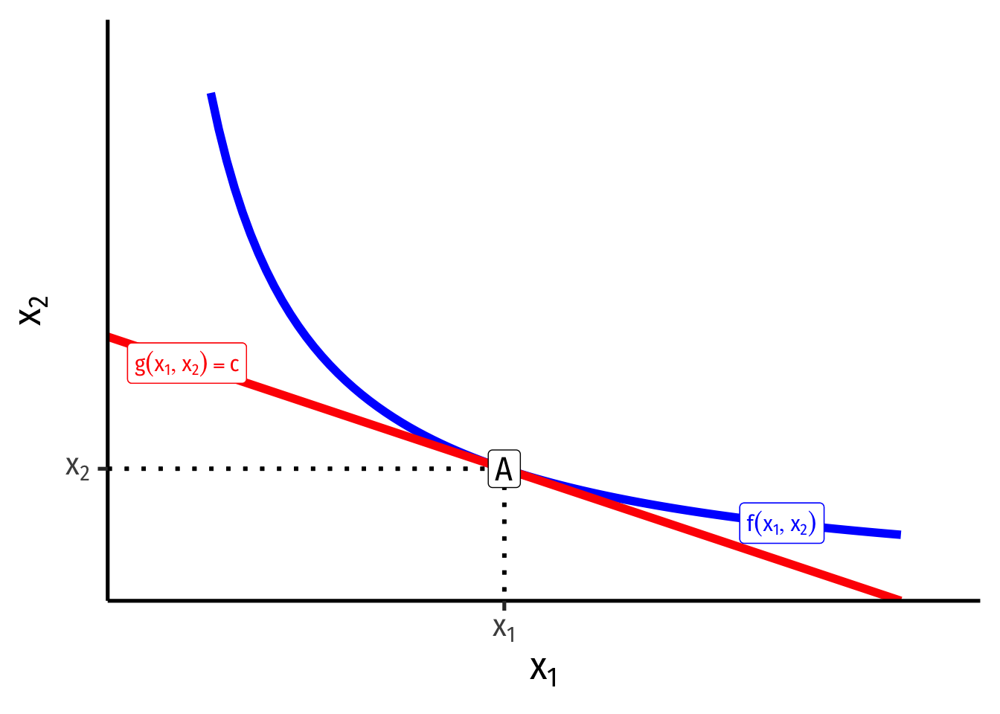

Nonlinear Functions & Optimization
A function is non-linear if it is curved, i.e. not a straight line. Nonlinear functions’ slopes may be different for different values of the independent variable.

The slope at any particular point of the function is is its first derivative, the rate of instantaneous change.
- Equivalently in practice, the value of \(f'(x)\) is the slope of a line tangent to the function at point \((x_i, f(x_i))\)
Most applications in economics pertain to marginal magnitudes
- Slopes mean change, and the margin implies a small change
- Often describe the rate of substitution between two goods (how much \(y\) must you give up to get one more unit of \(x\))
- At the limit, marginal magnitudes are derivatives of a total magnitude
- e.g. Marginal cost (or revenue) is the derivative of Total Cost (or revenue) (and its slope at each value)
- e.g. Marginal product is the derivative of Total Product (and its slope at each value)
We can describe a curved function as being either convex or concave with respect to the origin (0,0)

In simplest terms, a function is concave between two points \(a, b\) if a straight line connecting \(a\) and \(b\) lies beneath the function itself \[\color{red}{f[(t a)+(1-t)b]} > t f(a) + (1-t) f(b)\text{ for }0 < t < 1\]
- The above formula is a weighted average (for any set of weights \(w\), \(1-w\)), implying that the weighted average of \(a\) and \(b\) (dotted line in graph) is below the function
- The weighted average (dotted line) of \(a\) and \(b\) is below the function
- A function is also concave at a point if its second derivative at that point is negative \[\color{blue}{f[(w a)+(1-w)b]} < w f(a) + (1-w) f(b) \quad\text{ for }0 < w < 1\]
In simplest terms, a function is convex between two points \(a, b\) if a straight line connecting \(a\) and \(b\) lies above the function itself \[\color{blue}{f[(w a)+(1-w)b]} < w f(a) + (1-w) f(b) \quad \text{ for }0 < w < 1\] - The weighted average (dotted line) of \(a\) and \(b\) is above the function - A function is also convex at a point if its second derivative is positive
A function switches between convex and concave at an inflection point (point C in the example above) - Here, the second derivative (in addition to the first) is equal to 0
Optimization
For most curves, we often want to find the value where the function reaches its maximum or minimum (in general, these are types of “extrema”) along some interval

Formally, a function reaches a maximum at \(x^*\) if \(f(x^*) \geq f(x)\) for all \(x\); or a minimum at \(x^*\) if \(f(x^*) \leq f(x)\) for all \(x\) - In the graph above, the function reaches a maximum at \(x_1\) and a minimum at \(x_2\)
The maximum or minimum of a function occurs where the slope (first derivative) is zero, known in calculus as the “first-order condition” \[\frac{df(x^*)}{dx} = 0\]
- To distinguish between maxima and minima, we have the “second-order condition”
- A minimum occurs when the second derivative of the function is positive, and the curve is convex \[\frac{d^2f(x^*)}{dx^2} > 0\]
- A maximum occurs when the second derivative of the function is negative, and the curve is concave \[\frac{d^2f(x^*)}{dx^2} < 0\]
- An inflection point occurs where the second derivative of the function is zero
- All three are known as “critical points”
This is often useful for unconstrained optimization, e.g. finding the quantity of output that maximizes profits
Note, if we have a multivariate function \(y=f(x_1, x_2)\) and want to find the maximum or minimum (\(x_1^\star, x_2^\star\)), the first order conditions (FOC, plural) are where all the partial derivatives (derivative with respect to \(x_1\) and derivative with respect to \(x_2\)) are zero \[\begin{align*} \frac{\partial f(x_1^*, x_2^*)}{\partial x_1} &= 0 \\ \frac{\partial f(x_1^*, x_2^*)}{\partial x_2} &= 0 \\ \end{align*}\] There are second order conditions as well, to demonstrate whether an extremum is a maximum or minimum, but they are too complex to discuss here.
Often we want to find the maximum or minimum of a function over some restricted values of \((x_1, x_2)\), known as constrained optimization. This is one of the most important modeling tools in microeconomics, and will show up in many contexts.
- We want to find the maximum of some function:
\[\begin{align*} \max_{x_1, x_2} f(x_1, x_2)\\ \text{subject to } g(x_1, x_2)=c \\ \end{align*}\]
- \(f(x_1, x_2)\) is the “objective function” we wish to maximize (or minimize)
- \(g(x_1, x_2)=c\) is the “constraint” that limits us within some specified set of \(x_1\) and \(x_2\) values
Much of microeconomic modeling is about figuring out what an agent’s objective is (e.g. maximize profits, maximize utility, minimize costs) and what their constraints are (e.g. budget, time, output).
There are several ways to solve a constrained optimization problem (see Appendix to Ch. 5 in textbook), the most frequent (but requiring calculus) is Lagrangian multiplier method.
Graphically, the solution to a constrained optimization problem is the point where a curve (objective function) and a line (constraint) are tangent to one another: they just touch, but do not intersect (e.g. at point A below).

At the point of tangency (A), the slope of the curve (objective function) is equal to the slope of the line (constraint)
- This is extremely useful and is always the solution to simple constrained optimization problems, e.g.
- e.g. maximizing utility subject to income
- e.g. minimizing cost subject to a certain level of output
- We can find the equation of the tangent line using point slope form \[y-y_1=m(x-x_1)\]
- We need to know the slope \(m\), which we would know from the slope of the function at that point
- We know \((x_1, y_1\)) is the point of tangency